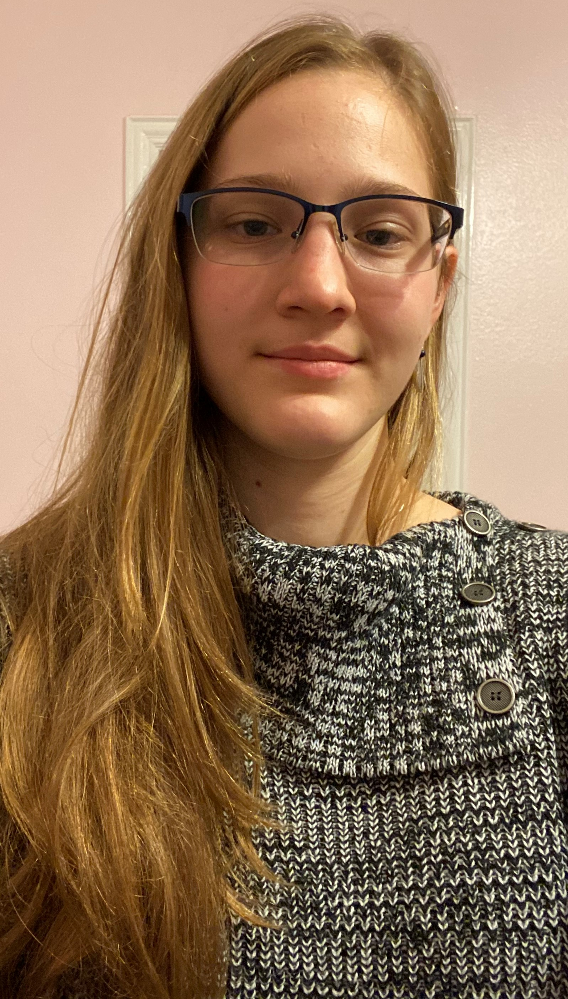

Professional Presence
About Me

HOWDY!
My name is Isidora Wright! I am a junior at Texas A&M University, pursuing a Bachelor's of Science in
Computer Engineering with a minor in cybersecurity. I am also pursuing a graduate certificate in cybersecurity.
I am a part of Aggie Coding Club (ACC) as well as Cybersecurity Club. I have just recently joined the ACC, but I have
been in the Cyber Club for one year now. I took a Codepath cybersecurity course last year that covered the basics
of cybersecurity.
This past summer, from June 6, 2022 - August 12, 2022, I did a cybersecurity internship with the Department of Energy (DOE) in Idaho Falls, Idaho. My project was to create a gap analysis between NIST 800-53 revision 4 and revision 5. During my internship, I got the opportunity to go to Sandia Labs in Albuquerque, New Mexico for the TracerFire Training. The entirety of the training was tracking the forensic footsteps of adversaries. Despite being fairly new to cybersecurity, my team and I got second place in the compettion that they held as well as got real life experience on what incident response is all about.